AX 전문 IT 기획자 / PM · 7년+
연 250억 거래 BMW 서비스부터 파리올림픽 글로벌 SaaS까지 —
자동화·AI 도입으로 약 30개 프로젝트에서 AX 혁신을 이끌며
연 3,000시간 절약·업무 처리량 150%↑를 달성했습니다.
저는 반복 업무를 자동화·AI로 전환(AX)해 조직이 일하는 방식 자체를 바꾸는 IT 기획자/PM입니다. Python·VBA·Selenium 자동화 파이프라인부터 Claude API 기반 분석 대시보드, AI 영상 관제·판독까지 — 거의 모든 프로젝트에서 AX 혁신을 직접 설계하고 구현했습니다.
기획·설계·개발·QA·운영까지 End-to-End로 직접 손을 대기에, AI를 "도입"에 그치지 않고 실제 업무에 녹여 성과 수치로 증명합니다. 개발 팀장 공백, 글로벌 규정 충돌, 시스템 결함 등 위기 상황에서도 끝까지 해결해 프로젝트를 완수해왔습니다.
7년 이상의 서비스·사업 기획 경험
요구사항 대회 운영 사업에 대한 분석 후, 솔루션이 필요합니다.
전세계 태권도 대회를 반자동으로 운영할 수 있도록 하는 온라인 구독 서비스. 대회 개최, 참가자 모집/결제, 스케줄 생성, 대진 생성, 실시간 경기 순서 조작, 경기 결과 통합 문서화, 참가자 경기 정보 안내 등의 기능을 갖춤.
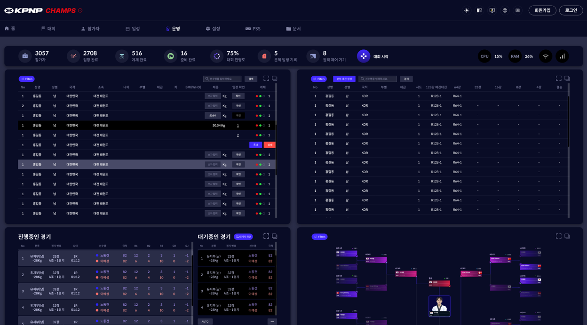
대회 메인 화면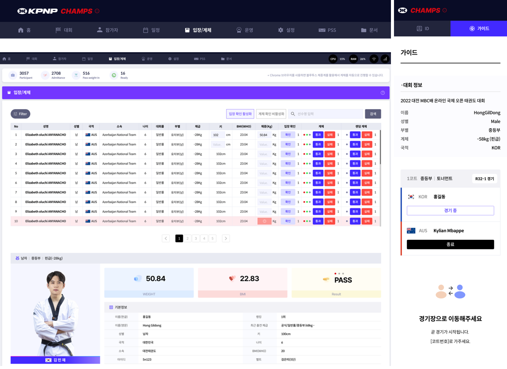
참가자 목록 관리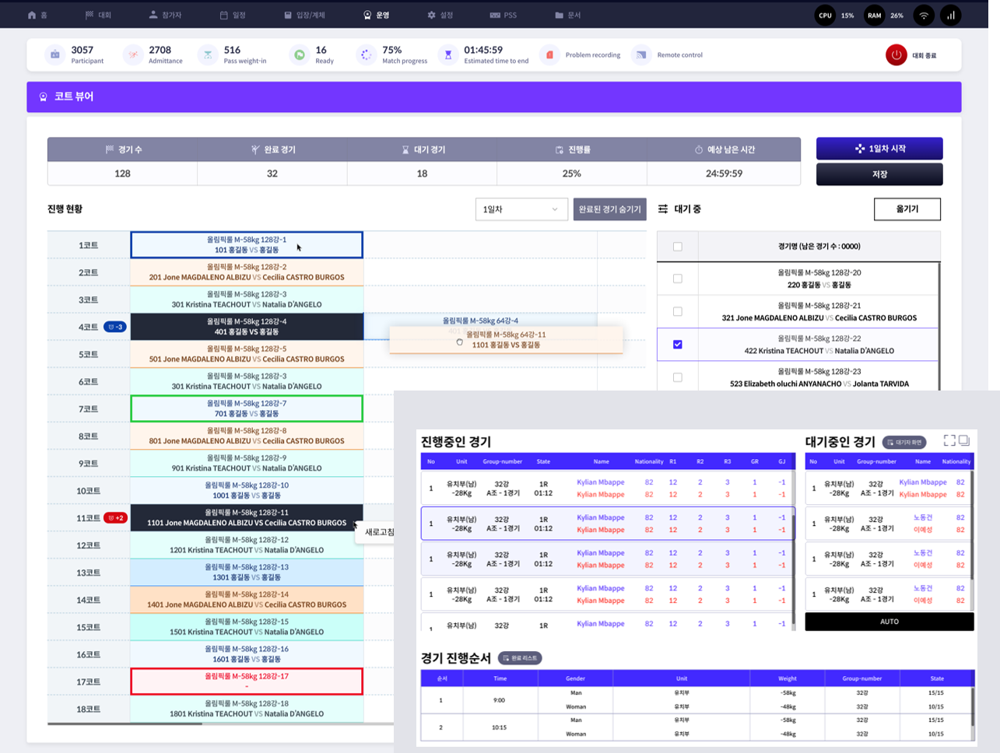
경기 스케줄 조정개선 전 — 구버전 (수기 운영)
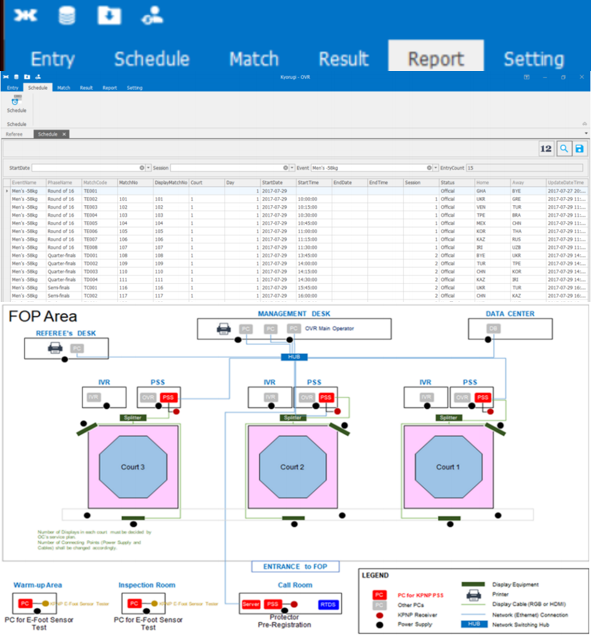
구버전 메인 화면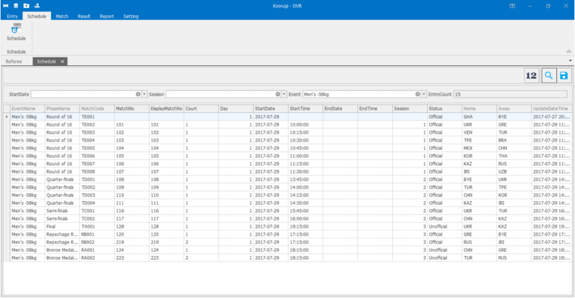
구버전 스케줄 (수기)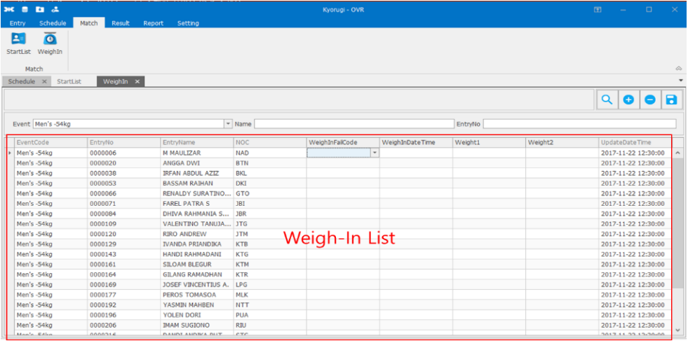
구버전 계체 관리170개국마다 태권도 대회 규정이 제각각이고 4개 외부 프로그램과 연동돼야 했습니다. 무엇보다 대회는 정해진 날짜에 반드시 열려야 해, 일정 지연이 곧 사업 실패로 직결되는 구조였습니다.
매 대회를 커스텀 개발하면 170개국 확장이 불가능하다고 판단했습니다. "규정 차이는 데이터(설정값)로, 실시간성은 SSE 기반 연동 아키텍처로 흡수한다"는 가설을 세우고 정책을 파라미터화하는 방향을 택했습니다.
개발팀장이 두 차례 공백이 된 위기에 ERD·API·통신 프로토콜을 직접 재설계·점검해 무결성을 확보했습니다. 대진·결제(PayPal)·결과 통합 수작업 80%를 자동화로 치환하고, Figma·Notion 멀티트랙으로 기획–개발–QA 사이클을 6개월 1회전으로 압축해 검증했습니다.
운영 시간 40%↓·수작업 80% 자동화·운영비 70%↓·연 100만 명 이용, 일정 지연 0으로 런칭해 2024 파리올림픽 공식 운영 서비스로 채택됐습니다.
대회마다 사람이 반복하던 대진·정산·문서화를 설정값(데이터)으로 추상화해, 170개국 규정 차이를 코드 수정 없이 흡수하는 확장형 자동화 구조로 전환했습니다.
요구사항 BMW Korea 3종 D2C 서비스의 운영 고도화 및 정산 무결성 확보가 필요합니다.
BMW Korea가 고객과 직접 계약하는 D2C 서비스 3종(SCP 차량 구독 · OAS 정비 예약 · WPP 차량 보험)의 통합 기획·운영·고도화. 월 거래액 약 20억 원, 월 15만 건 처리, 연 250억 규모의 플랫폼. 정산 로직 불일치·중복 결제 문제를 개선하여 정산 무결성 확보 및 오류율 50% 감소, 매출 40% 상승을 달성.
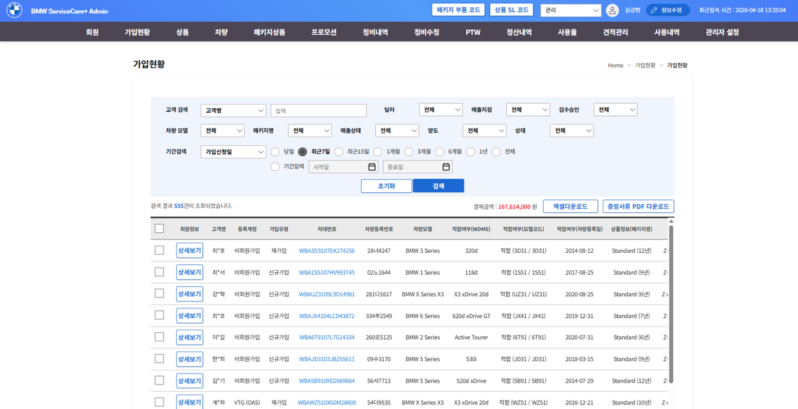
SCP 가입 관리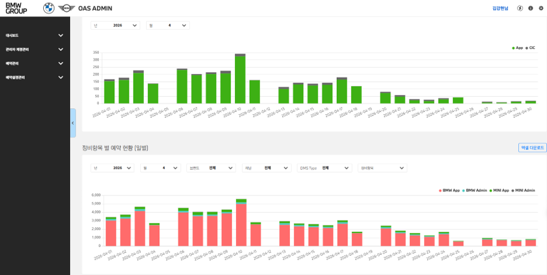
OAS 예약 현황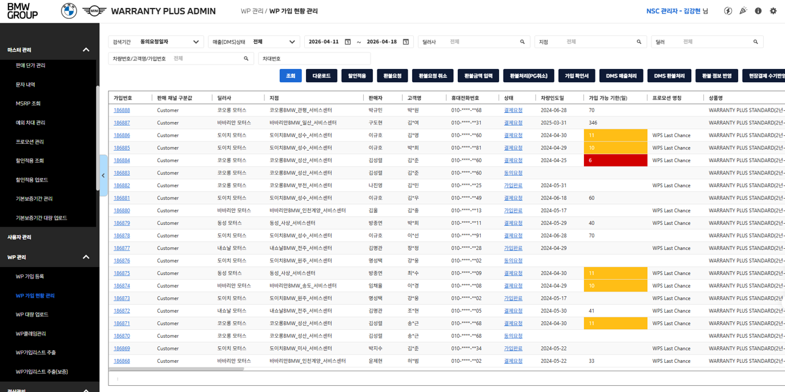
WPP 운영 관리SCP·OAS·WPP 3종이 서로 다른 시기에 구축돼 정산 로직 불일치·중복 결제·노쇼·수기 분석이 누적돼 있었습니다. 연 250억·월 15만 건 규모라 작은 오류 하나도 큰 손실과 CS(월 100여 건)로 이어졌습니다. 정산 에러를 전수 분석해 상위 3개 유형을 특정했습니다:
모든 에러를 동시에 잡기보다 "빈도×영향도로 우선순위화하면 적은 수정으로 최대 효과를 낸다"고 가정해 위 상위 3개 로직부터 재설계했습니다. 중복 결제는 정상 흐름에선 2회 결제가 불가능한데, 결제 완료 안내 페이지 로딩 중 뒤로가기 → 결제 버튼을 반복하면 중복 결제가 발생함을 재현으로 확인했습니다. 원인을 PG 콜백 중복으로 특정하고 멱등성 확보를 핵심 가설로 삼았습니다.
상위 3개 정산 로직을 재설계하고, PG 중복 콜백 경로에 멱등키를 도입했습니다. 온라인 체크인·온라인 보험 가입 채널을 신규 기획하고 ISMS-P 보안 조치를 이행했습니다. 효과는 2달치 처리 건 약 30만 건(월 15만 × 2)을 표본으로 Before/After 비교해 검증했습니다.
정산 처리 시간 3시간 → 0시간·정산 에러 50%↓·CS 월 100여 건 → 절반·중복 결제 100% 제거·노쇼 40% → 20%·신규 가입 40%↑·매출 40%↑을 달성했습니다.
사람이 눈으로 맞추던 정산 검증을 멱등키 기반 자동 대조 로직으로 대체해, 연 250억 규모에서 중복 결제를 원천 차단하고 정산 무결성을 시스템이 보장하도록 만들었습니다.
요구사항 반복 운영 업무의 자동화 및 BHC·OUTBACK 마케팅팀의 데이터 기반 의사결정 지원이 필요합니다.
VBA·Python 기반으로 BMW KR, BHC, OUTBACK 3개 브랜드의 반복 운영 업무를 자동화하고 종합 대시보드 및 리포트 시스템을 구축. 연 3,000시간 이상의 업무 시간을 절약했습니다.
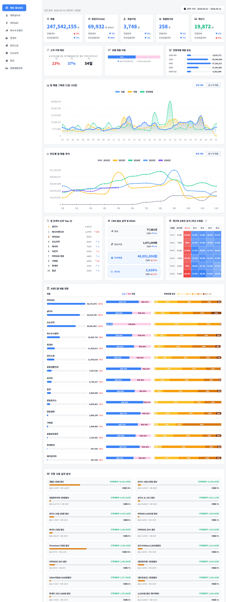
실제 광동상회 운영 대시보드 (LIVE 데이터 화면)기준일 2026-05-31 · 자사몰 운영 실데이터 기반
| 상품 | 매출 | 비중 |
|---|
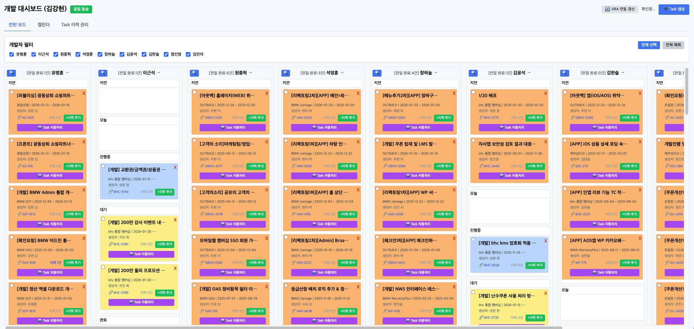
운영 칸반 보드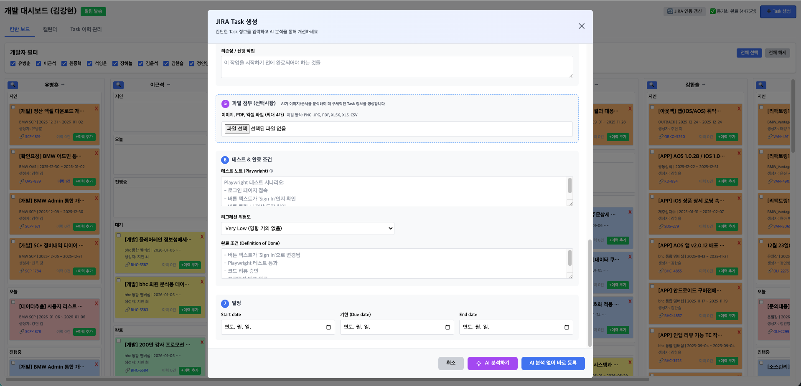
Jira 프로젝트 관리BMW의 가입 승인·정산 검증이 사람 손에 묶여 있었고, 더해 BHC·OUTBACK의 성과 리포트까지 수기에 의존했습니다. 게다가 마케팅 데이터가 GA·Matomo·Admin·앱스토어 등에 흩어져 인사이트 도출이 느렸습니다.
반복 업무는 '응대'가 아니라 '구조'로 풀어야 한다고 판단했습니다. 인력을 늘리는 대신 파이프라인을 만들면 처리량이 선형이 아닌 비선형으로 늘어난다는 가설 아래, 자동화와 데이터 통합을 동시에 설계했습니다.
Selenium·Python으로 가입 승인을 자동화하고, VBA·Python 리포트 파이프라인과 다중 소스 병렬 추출 마케팅 리포트, Claude API 연동 분석 대시보드를 구축했습니다. 베타 운영과 실사용 피드백으로 효과를 검증했습니다.
연 3,000시간 이상 절약·업무 자동화 80%·이벤트 성과 30% 이상 향상을 3개 브랜드에 적용했습니다.
반복 운영을 인력으로 받아내는 대신 Claude API·자동화 파이프라인으로 구조화해, 처리량을 비선형으로 키우고 흩어진 데이터를 실시간 의사결정 자산으로 바꿨습니다.
요구사항 기존 영상 판독이 불편하여 경기 지연이 발생합니다. 영상 판독 솔루션이 필요합니다.
스포츠 경기의 영상 판독을 위한 구독형 온라인 서비스. Latency 2초 이내의 실시간 송출 및 재생 제어 기능, 프레임 단위 역재생과 배속 재생, 카메라 묶음 제어, 외부 프로그램과의 연동 기능 탑재.
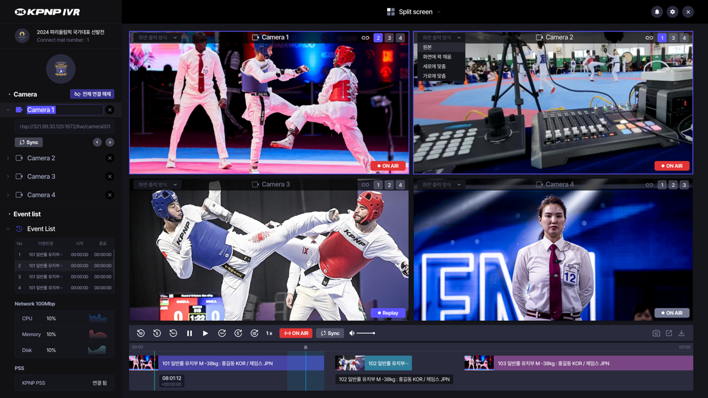
영상 판독 메인 화면심판 판정 편차와 영상 지연으로 경기가 지연됐습니다. '판정 신뢰'라는 추상적 문제를 Latency 2초 이내·1프레임 단위 역재생이라는 측정 가능한 품질 지표로 정의했습니다.
실시간 고화질 송출과 프레임 단위 역재생은 양립하기 어렵다고 보고, FFmpeg으로 프레임 단위 1차 저장 후 재생/역재생 경로를 이원화하면 두 요건을 동시에 만족할 수 있다는 가설을 세웠습니다.
순방향은 일반 인코딩 영상으로, 역방향은 프레임 저장본을 빠르게 불러오는 방식으로 구현했습니다. 평균 50대 외국인 심판을 대상으로 UX 인터뷰를 진행해 콘솔 호환·단축키 접근성을 우선 반영하고 1회 릴리스로 출시했습니다.
판독 속도 40%↑·사용자 만족도 92%·국제 대회 오심 0건을 기록하며 세계태권도연맹·대한유도회 2개 기관에 공식 채택됐습니다.
'판정 신뢰'라는 추상적 문제를 Latency 2초·프레임 단위 역재생이라는 측정 가능한 기술 지표로 재정의해, 사람의 판단을 보조하는 검증 가능한 자동화 시스템으로 구현했습니다.
졸업 요건을 모두 갖춘 상태에서 정책적 이득(청년 지원, 창업 패키지 등) 유지를 위해 졸업을 유예했으며, 현재는 졸업을 완료했습니다.